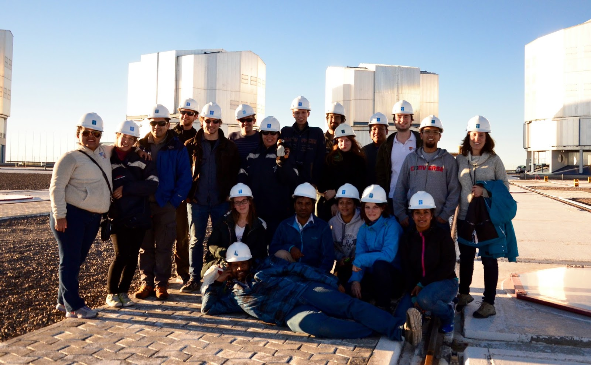

Santander International Summer School
“Reaching the Limits of the Sky“
Astronomical Instrumentation in the 21st Century
Date: November 17 to 28, 2014
Venue: Heidelberg Center for Latin America (HCLA), Santiago de Chile
External link:https://www.uni-heidelberg.de/forschung/international/santander_summer_schools/2014_reaching_the_limits.html
Twenty outstanding doctoral students from selected universities in Europe and Latin America will be invited to participate in the Santander International Summer School „Reaching the Limits of the Sky“. The speakers are scientists from Universität Heidelberg as well as renowned experts from other European and Latin American universities. The aim of the summer school is to bring together young researchers and PhD students who search an active career in astronomical instrumentation. The summer school addresses recent developments in adaptive optics and interferometry with an emphasis on VLTI and E-ELT instrumentation. Scientific directors of the summer school are Prof. Dr. Andreas Quirrenbach from Universität Heidelberg, Prof. Dr. Thomas Henning and Dr. Roland Gredel from the Max-Planck Institute for Astronomy (MPIA), furthermore Prof. Dr. Leopoldo Infante and Prof. Andrés Guesalaga from the Pontificia Universidad Católica (Santiago de Chile).
Attendees and organisers of the 2014 Summer School, "Reaching the limits of the sky, astronomical instrumentation in the 21st Century".